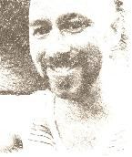

mapping
Harnessing the power of the Open Web Platform for mapping

some recent maps
some small examples
- Perceptual scaling of prop symbols
- proportional hello kitty symbol map
- PostGIS to include HI and AK
- GeoGSON with CartoDB layer
- CartoDB layers switcher
- toggle D3 county map of Kentucky oil and gas wells
- proportional symbol scaling on zoom
- animated choropleth in D3
- SVG animation with CSS
Q: What is the modern web mapping workflow and what skills and processes are needed to make a web map?
A: The current web mapping workflow consists of a range of technologies, skills, and conceptual knowledge, as well as a process for their implementation to achieve a desired result. The range and sequence of the web development workflow is in part captured by the notion of the full stack, which refers to the suite of technologies and required skill sets needed to successfully transform data into a deployable product on the web.
Richard Donohue
web cartographer, geographer, front-end web developer, teacher, information architect, rascal
I am trained as a geographer and cartographer within Science Hall in the Department of Geography at the University of Wisconsin-Madison.
I currently work as a postdoctoral scholar for the Department of Geography at the University of Kentucky, designing the curriculum and developing courses for New Maps Plus.
contact & more info
- rgdonohue[at]gmail.com
- @rgdonohue
- github.com/rgdonohue
- bl.ocks.org/rgdonohue
- curriculum vitae
situated laboratories?
The name "situated laboratories" originated from the writings of Science and Technology scholars Bruno Latour, John Law, and Donna Haraway. For many years it probably smacked of obscure, elitist intellectualism (which it may have been).
Given my recent training in spatial science – situated? – and desire for a playful, experimental engagement with the web – laboratory? – perhaps it's coming to make sense.